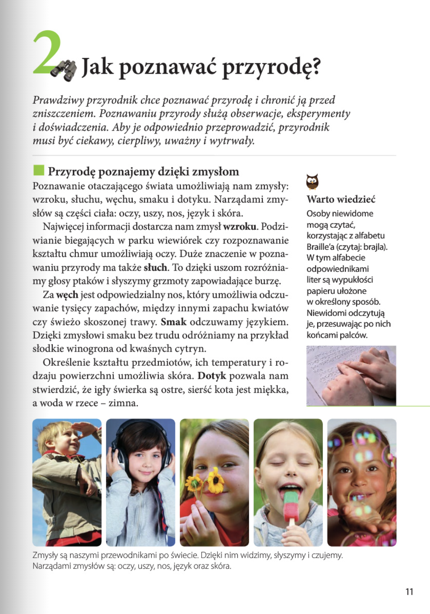
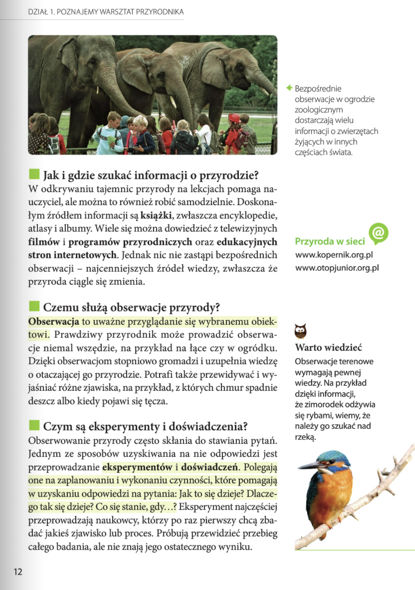
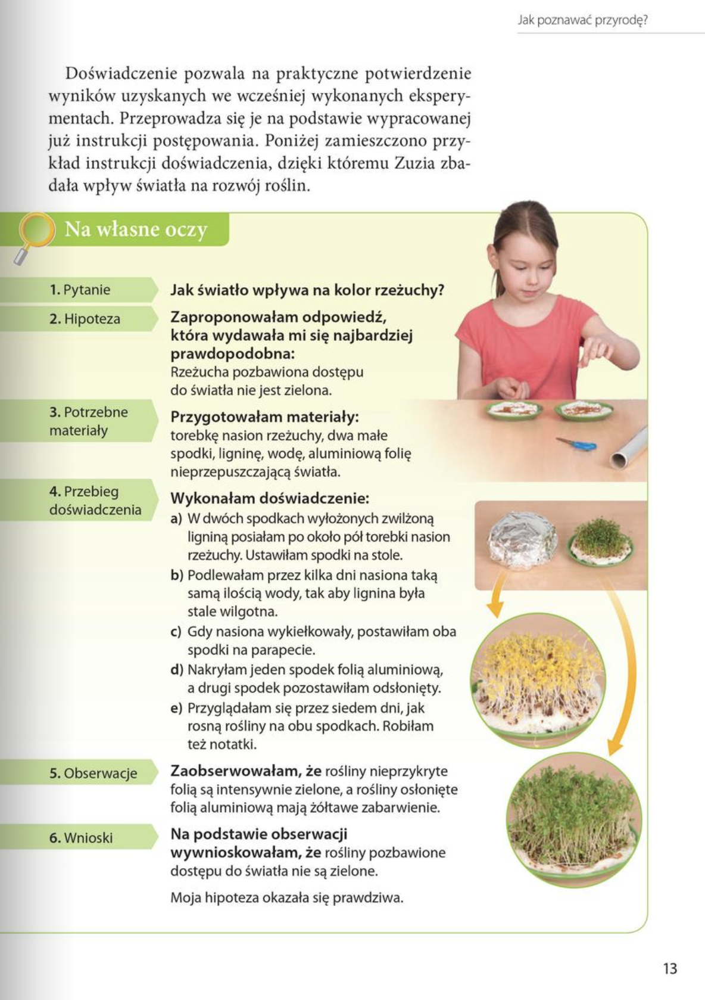

Przyroda
DZIAŁ 1. POZNAJEMY WARSZTAT PRZYRODNIKA: 8-33
Lekcja 2. Jak poznawać przyrodę?: 11

2. Jak poznawać przyrodę?
Prawdziwy przyrodnik chce poznawać przyrodę i chronić ją przed zniszczeniem. Poznawaniu przyrody służą obserwacje, eksperymenty i doświadczenia. Aby je odpowiednio przeprowadzić, przyrodnik musi być ciekawy, cierpliwy, uważny i wytrwały.
Przyrodę poznajemy dzięki zmysłom
Poznawanie otaczającego świata umożliwiają nam zmysły: wzroku, słuchu, węchu, smaku i dotyku. Narządami zmysłów są części ciała: oczy, uszy, nos, język i skóra.
Najwięcej informacji dostarcza nam zmysł wzroku. Podziwianie biegających w parku wiewiórek czy rozpoznawanie kształtu chmur umożliwiają oczy. Duże znaczenie w poznawaniu przyrody ma także słuch. To dzięki uszom rozróżniamy głosy ptaków i słyszymy grzmoty zapowiadające burzę.
Za węch jest odpowiedzialny nos, który umożliwia odczuwanie tysięcy zapachów, między innymi zapachu kwiatów czy świeżo skoszonej trawy. Smak odczuwamy językiem. Dzięki zmysłowi smaku bez trudu odróżniamy na przykład słodkie winogrona od kwaśnych cytryn.
Określenie kształtu przedmiotów, ich temperatury i rodzaju powierzchni umożliwia skóra. Dotyk pozwala nam stwierdzić, że igły świerka są ostre, sierść kota jest miękka, a woda w rzece – zimna.
Warto wiedzieć
Osoby mogą czytać, korzystając z alfabetu Braille’a (czytaj: brajla). W tym alfabecie odpowiednikami liter są wypukłości papieru ułożone w określony sposób. Niewidomi odczytują je, przesuwając po nich końcami palców.
Bezpośrednie obserwacje w ogrodzie zoologicznym dostarczają wielu informacji o zwierzętach Na własne oczy żyjących w innych częściach świata.
Jak i gdzie szukać informacji o przyrodzie?
W odkrywaniu tajemnic przyrody na lekcjach pomaga nauczyciel, ale można to również robić samodzielnie. Doskonałym źródłem informacji są książki, zwłaszcza encyklopedie, atlasy i albumy. Wiele się można dowiedzieć z telewizyjnych filmów i programów przyrodniczych oraz edukacyjnych stron internetowych. Jednak nic nie zastąpi bezpośrednich obserwacji – najcenniejszych źródeł wiedzy, zwłaszcza że przyroda ciągle się zmienia.
Czemu służą obserwacje przyrody?
Obserwacja to uważne przyglądanie się wybranemu obiektowi. Prawdziwy przyrodnik może prowadzić obserwacje niemal wszędzie, na przykład na łące czy w ogródku. Dzięki obserwacjom stopniowo gromadzi i uzupełnia wiedzę o otaczającej go przyrodzie. Potrafi także przewidywać i wyjaśniać różne zjawiska, na przykład, z których chmur spadnie deszcz albo kiedy pojawi się tęcza.
Czym są eksperymenty i doświadczenia?
Obserwowanie przyrody często skłania do stawiania pytań. Jednym ze sposobów uzyskiwania na nie odpowiedzi jest przeprowadzanie eksperymentów i doświadczeń. Polegają one na zaplanowaniu i wykonaniu czynności, które pomagają w uzyskaniu odpowiedzi na pytania: Jak to się dzieje? Dlaczego tak się dzieje? Co się stanie, gdy…? Eksperyment najczęściej przeprowadzają naukowcy, którzy po raz pierwszy chcą zbadać jakieś zjawisko lub proces. Próbują przewidzieć przebieg całego badania, ale nie znają jego ostatecznego wyniku.
Warto wiedzieć
Obserwacje terenowe wymagają pewnej wiedzy. Na przykład dzięki informacji, że zimorodek odżywia się rybami, wiemy, że należy go szukać nad rzeką.


Doświadczenie pozwala na praktyczne potwierdzeniewyników uzyskanych we wcześniej wykonanych eksperymentach. Przeprowadza się je na podstawie wypracowanej już instrukcji postępowania. Poniżej zamieszczono przykład instrukcji doświadczenia, dzięki któremu Zuzia zbadała wpływ światła na rozwój roślin.
Na własne oczy
1. Pytanie -> Jak światło wpływa na kolor rzeżuchy?
2. Hipoteza -> Zaproponowałam odpowiedź,która wydawała mi się najbardziej prawdopodobna:
Rzeżucha pozbawiona dostępu do światła nie jest zielona.
3. Potrzebne materiały: -> Przygotowałam materiały: torebkę nasion rzeżuchy, dwa małe spodki, ligninę, wodę, aluminiową folię nieprzepuszczającą światła.
4. Przebieg doświadczenie -> Wykonałam doświadczenia:
- W dwóch spodkach wyłożonych zwilżoną ligniną posiałam po około pół torebki nasion rzeżuchy. Ustawiłam spodki na stole.
- Podlewałam przez kilka dni nasiona taką samą ilością wody, tak aby lignina była stale wilgotna.
- Gdy nasiona wykiełkowały, postawiłam oba spodki na parapecie.
- Nakryłam jeden spodek folią aluminiową, a drugi spodek pozostawiłam odsłonięty.
- Przyglądałam się przez siedem dni, jak rosną rośliny na obu spodkach. Robiłam też notatki.
5. Obserwacje -> Zaobserwowałam, że rośliny nieprzykryte folią są intensywnie zielone, a rośliny osłonięte folią aluminiową mają żółtawe zabarwienie.
6. Wnioski -> Na podstawie obserwacji wywnioskowałam, że rośliny pozbawione dostępu do światła nie są zielone.
Moja hipoteza okazała się prawdziwa.
Jak bezpiecznie prowadzić obserwacje i doświadczenia przyrodnicze?
Podczas prowadzenia doświadczeń i obserwacji pamiętaj o bezpieczeństwie. Oto kilka rad:
- Przy przeprowadzaniu doświadczeń opisanych w podręczniku trzymaj się ściśle instrukcji.
- Jeśli samodzielnie zaplanujesz doświadczenie, zapytaj nauczyciela lub rodziców, czy można je bezpiecznie przeprowadzić.
- Niebezpieczne doświadczenia, na przykład z użyciem ognia lub ostrych przedmiotów, wykonuj tylko pod opieką dorosłych.
- Podczas wycieczek terenowych nie oddalaj się od grupy,aby się nie zgubić.
- Zanim nauczysz się posługiwać mapą, samodzielne wycieczki odbywaj tylko po znanym terenie.
- Podczas wycieczek nie jedz i nie dotykaj nieznanych roślin ani grzybów, ponieważ mogą spowodować zatrucia lub podrażnienia skóry i oczu.
- Nie zbliżaj się do dzikich zwierząt i ich nie dotykaj, ponieważ mogą ukąsić lub przenosić groźne choroby. Przyrządy przydatne podczas obserwacji terenowych
To najważniejsze!
- Przyrodę możemy poznawać dzięki zmysłom: wzroku, słuchu, węchu, smaku i dotyku.
- Źródłami wiedzy o przyrodzie są między innymi: książki, filmy, programy przyrodnicze i edukacyjne strony internetowe.
- Obserwacje polegają na uważnym przyglądaniu się wybranemu obiektowi.
- Eksperymenty i doświadczenia pomagają wyjaśniać zjawiska i procesy zachodzące w przyrodzie.
Czy wiesz, czy umiesz?
- Wymień wszystkie zmysły człowieka i odpowiadające im narządy.
- Na podstawie doświadczenia opisanego na stronie 13 wymień etapy doświadczenia przyrodniczego.
- Wskaż sposoby poznawania przyrody, które uważasz za najlepsze. Uzasadnij odpowiedź.
- Wyjaśnij, jakich zasad należy przestrzegać podczas:
a) wykonywania doświadczeń przyrodniczych,
b) wycieczek terenowych.